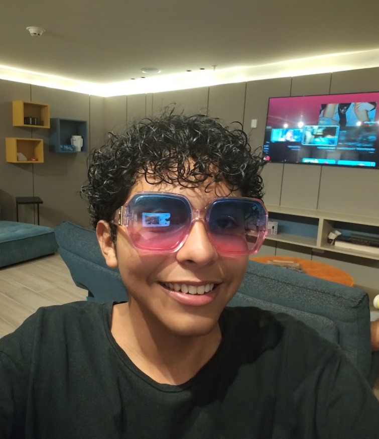
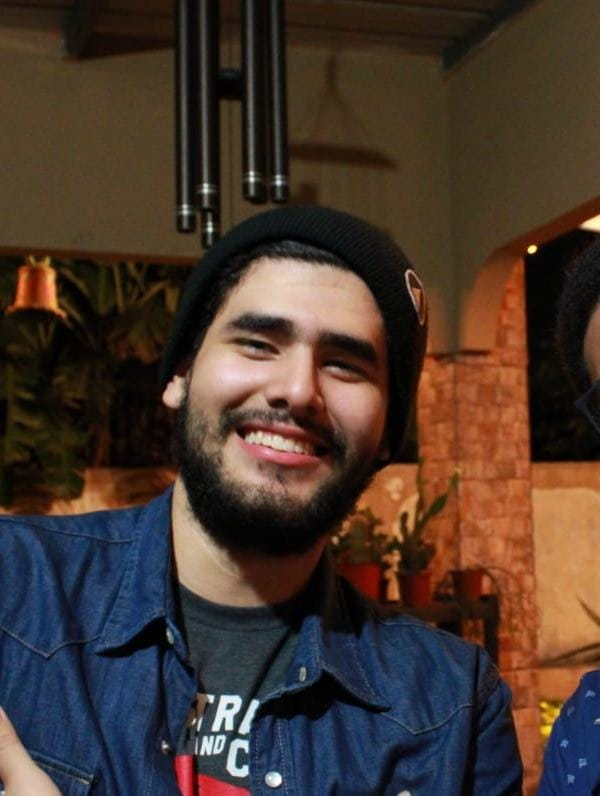

David Rios
Desarrollo Web
Responsable de la programación del sistema y de la estructuración de la interfaz, asegurando el
correcto funcionamiento y la integración de los módulos.
Cédula: 8-1035-2335
Carrera: Ingeniería de Software
Meilyn Camaño
Coordinación, Diseño y Documentación
Responsable del diseño del wireframe, la estructuración de las páginas del sistema y la coordinación del desarrollo del proyecto.
Además, participó en la elaboración y organización de la documentación.
Cédula: 8-1032-2281
Carrera: Ingeniería de Software

Peter Rivera
Desarrollo Front-End
Encargado de la elaboración y estructura de las páginas HTML, colaborando
en el diseño y organización de la interfaz del sistema.
Cédula: 8-972-1516
Carrera: Ingeniería de Software
Carlos Garay
Base de Datos
Encargado del diseño y creación de la base de datos, así como del desarrollo de la conexión y
funcionalidades del sistema.
Cédula: 8-994-1735
Carrera: Ingeniería de Software
Juan Spiegel
QA & Documentación
Colaboró en la elaboración y actualización de la documentación del proyecto, manteniendo el registro de avances,
modificaciones y aspectos relevantes del desarrollo.
Cédula: 9-767-1734
Carrera: Ingeniería de Software
Abraham Gomez
Documentación
Responsable de documentar el desarrollo del proyecto, registrando los cambios realizados,
las dificultades encontradas y las soluciones implementadas durante cada etapa.
Cédula: 8-1007-1552
Carrera: Ingeniería de Software